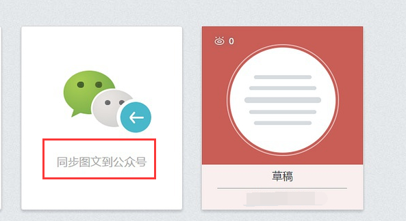
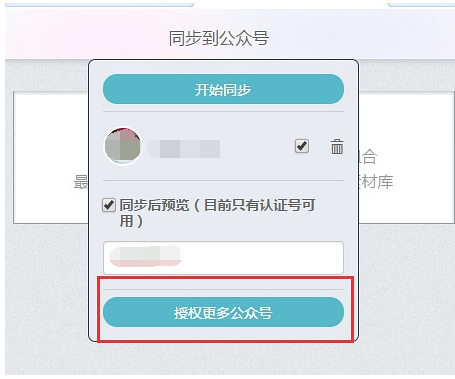

Home
How to use Xiumi
Publish on wechat
Other useful websites
Publish your article on wechat public platform
Click
我的秀米(my Xiumi).
click
同步图文到公众号（Synchronize your article to wechat public platform).

Click
开始同步（begin synchronizing)
and now you can find that article on your wechat public platform.
